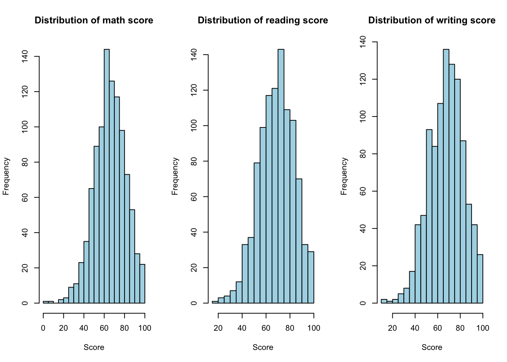
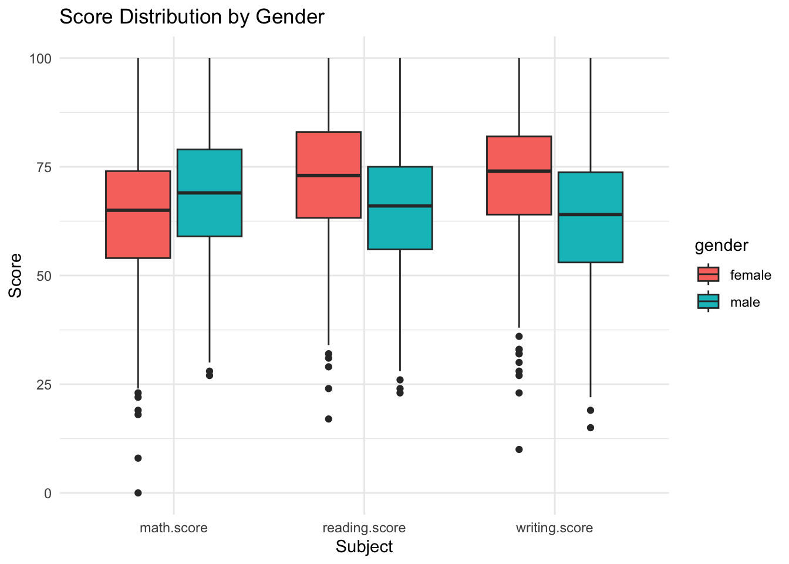
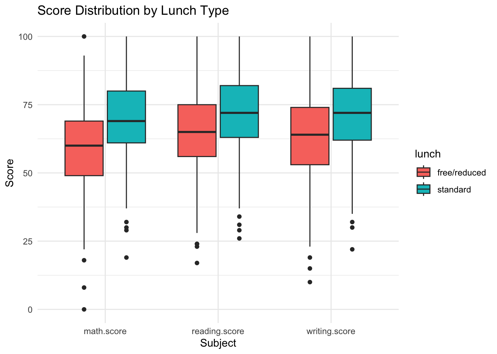
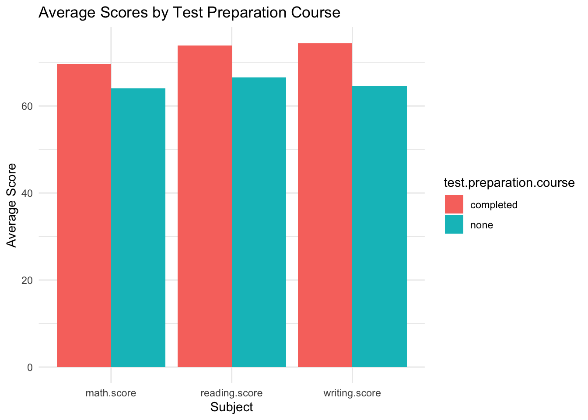
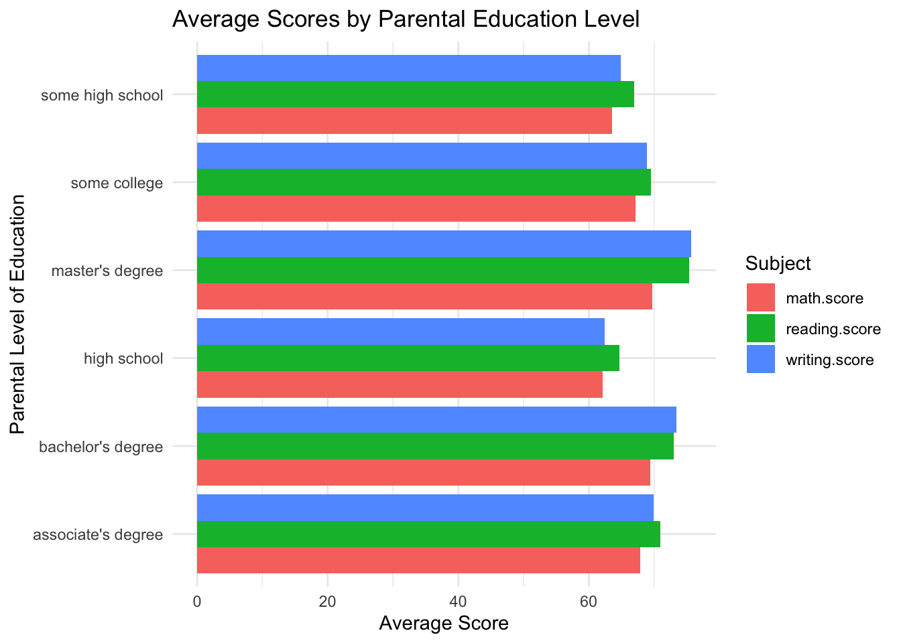
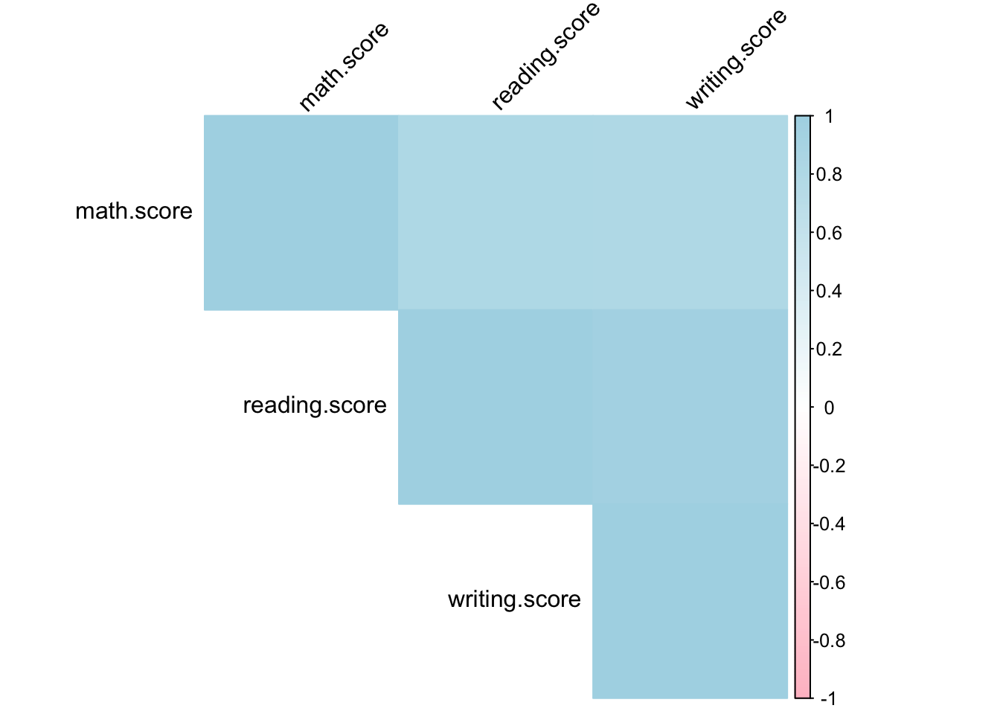

The goal of this final project is to explore how different factors affect a students performance in three testing subjects: math, reading, and writing. This will be presented in a storyboard dashboard aimed at a general audience.
Project Summary
This project involves the creation of an interactive dashboard designed for educators, parents, and individuals working closely with children. The dashboard’s goal is to compile data insights and display them in an eye-catching, intuitive manner that makes comprehension and decision-making easier. It is a useful tool for tracking patterns, assessing results, and determining workable tactics related to the education, growth, or general well-being of children.
The dashboard’s main goal is to close the gap between useful applications and complicated data. It will use dynamic visualisations, filters, and summaries to deliver concise, useful insights. Without needing to be highly skilled in data analysis, users will be able to examine important indicators, spot trends, and come to well-informed conclusions. Furthermore, depending on the data displayed, the dashboard can have customised alerts or recommendations to point users in the direction of best practices.
Teachers, parents, and professionals who interact with children in different capacities—such as social workers, counsellors, or program coordinators—are the dashboard’s target audience. Although this audience may not have much experience with advanced data analysis, they are probably experts in their particular industries. For example, teachers may be aware of patterns in student performance but lack the knowledge necessary to evaluate unprocessed data or decipher statistical results. In a similar vein, parents could appreciate clear-cut findings that are immediately linked to practical results.
The audience is anticipated to have little to intermediate knowledge of quantitative and data analysis. Even though they might comprehend fundamental ideas like averages, percentages, and trends, they are probably not comfortable with sophisticated statistical methods or programming languages. Because of this, the dashboard’s design places a high value on clarity and accessibility, making it possible for users to obtain insights without the need for specific technical knowledge.
The dashboard will have user-friendly navigation and informative elements to cater to the audience’s diverse levels of knowledge. For instance, to help explain complicated concepts, visualisations will be accompanied by tooltips, interactive instructions, and plain-language descriptions. The tool’s usefulness will be improved by filters and drill-down features that let users examine data pertinent to their particular situation. Furthermore, responsiveness and accessibility will be prioritised in the design to guarantee that users can interact with the dashboard on a variety of devices and settings.
The project’s overarching goal is to provide its audience with data-driven insights that can guide both their long-term and daily decisions. This could require teachers to pinpoint the areas in which their students want more assistance. For parents, it could entail monitoring developmental milestones or comprehending more general patterns that impact kids. In the end, our dashboard facilitates informed, significant decision-making by acting as a link between the abundance of data available and the real-world requirements of individuals who look after and instruct children.
Understanding the Dataset
This project is based on a dataset that has information on student performance in Exams. It has the following columns:
gender: the gender of the student (Male/Female)
race/ethnicity: ethnic group (A, B, C, D, E)
parental level of education: the highest level of education completed by the student’s parents (High School, Associate’s Degree, Bachelor’s Degree, Master’s Degree)
lunch: the type of lunch a student receives (Standard, Free, Reduced)
test preparation course: if the student has completed a test preparation course (None/Completed)
math score: math exam score (0-100)
reading score: reading exam score (0-100)
writing score: writing exam score (0-100)
Exploratory Data Analysis
Here we’re going to perform a basic analysis to be able to understand the data and identify key trends.
Descriptive Statistics
First we load the dataset into R and then we take a peek at the first 6 rows, just to make sure that it was all loaded in properly.
library(ggplot2)library(dplyr)
Attaching package: 'dplyr'
The following objects are masked from 'package:stats':
filter, lag
The following objects are masked from 'package:base':
intersect, setdiff, setequal, union
library(tidyr)library(corrplot)
corrplot 0.95 loaded
data <-read.csv('/Users/susanubogu/Desktop/university assignments/fall 24/dacss 604/final project/StudentsPerformance.csv')head(data)
gender race.ethnicity parental.level.of.education lunch
1 female group B bachelor's degree standard
2 female group C some college standard
3 female group B master's degree standard
4 male group A associate's degree free/reduced
5 male group C some college standard
6 female group B associate's degree standard
test.preparation.course math.score reading.score writing.score
1 none 72 72 74
2 completed 69 90 88
3 none 90 95 93
4 none 47 57 44
5 none 76 78 75
6 none 71 83 78
dim(data)
[1] 1000 8
Based on the data card we know there are no missing values, but we can double check that here. Since, the sum of the existing NAs is 0, we can conlude that there are none in the dataset.
sum(is.na(data))
[1] 0
We then want to take a look at the mean, median, and standard deviation for each subject score.
We then take a look at what the data looks like. Taking a look at the histogram we are able to see how the scores are spread out.
subjects <-c("math.score", "reading.score", "writing.score")par(mfrow =c(1, 3))for (i in subjects) {hist(data[[i]], main =paste("Distribution of", gsub("\\.", " ", i)),xlab ="Score", col ="light blue", breaks =20)}

We then want to use box plots to see how different categorical variables affect a student’s score.
data_long <- data |>pivot_longer(cols =c(math.score, reading.score, writing.score),names_to ="Subject", values_to ="Score")ggplot(data_long, aes(x = Subject, y = Score, fill = gender)) +geom_boxplot() +labs(title ="Score Distribution by Gender", x ="Subject", y ="Score") +theme_minimal()

ggplot(data_long, aes(x = Subject, y = Score, fill = lunch)) +geom_boxplot() +labs(title ="Score Distribution by Lunch Type", x ="Subject", y ="Score") +theme_minimal()

Next, we want to use a bar graph to see how the average of scores was affected by test preparation and by the level of parental education.
avg_scores <- data %>%group_by(test.preparation.course) %>%summarise(across(c(math.score, reading.score, writing.score), mean)) %>%pivot_longer(cols =c(math.score, reading.score, writing.score), names_to ="Subject", values_to ="Average.Score")ggplot(avg_scores, aes(x = Subject, y = Average.Score, fill = test.preparation.course)) +geom_bar(stat ="identity", position ="dodge") +labs(title ="Average Scores by Test Preparation Course", x ="Subject", y ="Average Score") +theme_minimal()

avg_scores_parent_edu <- data %>%group_by(parental.level.of.education) %>%summarise(across(c(math.score, reading.score, writing.score), mean)) |>pivot_longer(cols =c(math.score, reading.score, writing.score),names_to ="Subject", values_to ="Average.Score")ggplot(avg_scores_parent_edu, aes(x = Average.Score, y = parental.level.of.education, fill = Subject)) +geom_bar(stat ="identity", position ="dodge") +labs(title ="Average Scores by Parental Education Level", x ="Average Score", y ="Parental Level of Education") +theme_minimal()

We now want to use a heatmap to see if the scores are correlated to one another.
Warning in ind1:ind2: numerical expression has 2 elements: only the first used

Key Findings
Based on the analysis above and the visualizations I am choosing to focus on the following findings:
Effect of Test Preparation: We can see that the students who had completed some test preparation did much better on the exams than students who had completed none. With completing the test prep there was at least a 5% increase in the average score, going all the way up to a 10% increase.
Gender Differences: We can see that the students who ideintifies as women had a higher average score in the math section. However, in the reading and writing exams the men outshone women. It is interesting to notice that the women had heavy outliers in all exams whereas we don’t really see that trend with the men.
Lunch Type: We can see that students who had a standard lunch tended to score higher than those who were on either a free or a standard lunch.
Parental Education: We can see that students with parents who have completed a Master’s degree had the highest scores in all exams. The general trend with this is that the more education a student’s parent has gone through, the higher they tend to score on exams.
Interactive Dashboard
If you would like to play around with the data and see how different variables interact with the average of the scores you can use this dashboard.
The linear regression models aim to identify key predictors of student performance in math, reading, and writing scores and to quantify their impact.
The summary of the model for math scores showed that:
Gender was not a statistically significant predictor.
Parental level of education had a positive and significant impact, with higher education levels correlating with better performance.
Lunch type and test preparation course were significant predictors, with standard lunch and completing the test prep associated with higher scores.
While the models provide valuable insights, they do not account for unobserved factors such as individual motivation or classroom environment, which could influence student performance.
Call:
lm(formula = writing.score ~ gender + race.ethnicity + parental.level.of.education +
lunch + test.preparation.course, data = data)
Residuals:
Min 1Q Median 3Q Max
-48.946 -8.070 0.460 8.823 28.440
Coefficients:
Estimate Std. Error t value
(Intercept) 71.9142 1.7736 40.548
gendermale -9.0965 0.7948 -11.444
race.ethnicitygroup B 1.2201 1.6103 0.758
race.ethnicitygroup C 2.4126 1.5081 1.600
race.ethnicitygroup D 5.9307 1.5386 3.855
race.ethnicitygroup E 5.1373 1.7067 3.010
parental.level.of.educationbachelor's degree 3.4849 1.4229 2.449
parental.level.of.educationhigh school -5.8143 1.2289 -4.732
parental.level.of.educationmaster's degree 5.1832 1.8363 2.823
parental.level.of.educationsome college -0.9204 1.1814 -0.779
parental.level.of.educationsome high school -5.3222 1.2629 -4.214
lunchstandard 8.2028 0.8268 9.921
test.preparation.coursenone -10.0587 0.8296 -12.125
Pr(>|t|)
(Intercept) < 2e-16 ***
gendermale < 2e-16 ***
race.ethnicitygroup B 0.448819
race.ethnicitygroup C 0.109967
race.ethnicitygroup D 0.000123 ***
race.ethnicitygroup E 0.002679 **
parental.level.of.educationbachelor's degree 0.014494 *
parental.level.of.educationhigh school 2.55e-06 ***
parental.level.of.educationmaster's degree 0.004858 **
parental.level.of.educationsome college 0.436100
parental.level.of.educationsome high school 2.74e-05 ***
lunchstandard < 2e-16 ***
test.preparation.coursenone < 2e-16 ***
---
Signif. codes: 0 '***' 0.001 '**' 0.01 '*' 0.05 '.' 0.1 ' ' 1
Residual standard error: 12.48 on 987 degrees of freedom
Multiple R-squared: 0.334, Adjusted R-squared: 0.3259
F-statistic: 41.25 on 12 and 987 DF, p-value: < 2.2e-16
Conclusion
Here are the key findings of the study:
Gender: Male students scored significantly higher in math (+4.99) but scored lower in reading (-7.07) and writing (-9.10). Gender differences in writing were particularly pronounced.
Race/Ethnicity: Students in Group E consistently outperformed other groups across all three subjects, with significant positive effects in math (+10.13), reading (+5.51), and writing (+5.14).
Parental Education: Students with parents holding only high school diplomas or less consistently scored lower across all subjects. For example, “high school” was associated with a -4.90 effect on reading scores and -5.81 on writing scores. Master’s degrees showed positive impacts, particularly on writing scores (+5.18).
Lunch Type: Students with standard lunches performed significantly better in all subjects: math (+10.88), reading (+7.25), and writing (+8.20), underscoring the role of nutrition in academic success.
Test Preparation Course: Completing the test preparation course was strongly associated with improved scores. Students who did not complete the course scored lower by -5.49 in math, -7.36 in reading, and -10.06 in writing. Writing scores showed the largest impact of test preparation.
Future analysis could explore interactions between these variables, such as how the effect of test preparation varies across different racial or socioeconomic groups, or the impact of combining multiple interventions like better nutritional programs and targeted test preparation. Longitudinal studies could also assess the sustainability of these improvements over time.
Overall, this dashboard offers actionable insights to guide decision-making and foster a deeper understanding of educational disparities. It highlights key factors contributing to student success, providing educators and policymakers with data-driven strategies to enhance academic outcomes across diverse student populations.